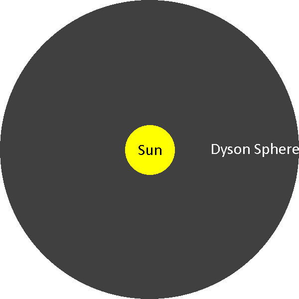
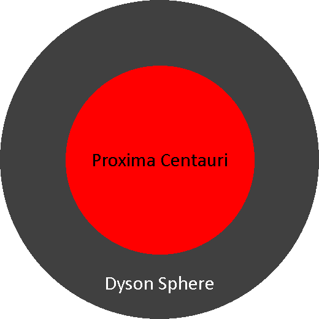

Ouf! Note: I do not include the power generation for any of these Dyson spheres, since the power generation would simply be identical to the luminosity of the star itself.
|  |
The Dyson sphere around the sun, to scale. |
A Dyson sphere contructed for the sun would need to have a radius of about 6 solar radii, or else it would melt. A Dyson sphere located at this distance would be a nice, cool 1666 K. A rotation period of ~41h would help to reduce strain on the surface of the sphere far from the axis of rotation.
In this first analysis, I assume a thickness of 5 cm, a thickness typical of consumer-grade solar panels, solely for the purposes of setting an absolute lower bound on resources. This results in a total volume of 1.095×1019 m3. I also assume a density of 219 kg/m3, which is, again, typical of consumer-grade solar panels. This results in a total mass of 2.398×1021 kg.
This is 0.1259% of the iron on Earth, so at least the lower bound appears somewhat feasible. Presumably though, you'd want to mine this stuff as close to the site as possible, like Mercury. This is 2.277% of the iron on Mercury, so looks good so far.
Humans produce about 2.28 billion tons of iron ore annually, so if we had an analogous mining operation on Mercury, it would take about 1.052 Billion years to mine enough ore. And this is, of course, assuming perfect recovery rate, which is, of course, impossible.
In this next analysis, I assume a thickness of 2 m, which I find to be thin, yet reasonable. This results in a total volume of 4.379×1020 m3. I assume a similar density again, because I imagine in this situation there would be significant empty space. This results in a total mass of 9.59×1022 kg.
This is 91.07% of the iron on Mercury, so the situation appears pretty grim. The next-closest feasible location for large-scale mining is the Moon, followed by Mars. If we completely mine out all three, we might have enough resources to construct the Dyson sphere.
At this point, should I even bother mentioning it would take about 42 Billion years to mine this ore?
|  |
The Dyson sphere around Proxima Centauri, to scale. The scale in this image is 20x smaller than the Sun. |
Choosing Proxima Centauri over the sun has several advantages. For one, a Dyson sphere contructed for Proxima Centauri would need to have a radius of about 0.26 solar radii, which is one twenty-third the radius needed for the sun, since it is both smaller and cooler than the sun. The second advantage is that nobody really cares if we dismantle a few exoplanets. Sorry, but I don't want to lose Mercury for a silly sphere! It's a bit of a trek from the sun, but if you're building a Dyson sphere, you'll have the resources to spare anyways. A Dyson sphere located at this distance would exist at a similar temperature to before. A rotation period of ~ 63 minutes would help to reduce strain on the surface of the sphere far from the axis of rotation.
From the sources in the prior analysis, this results in a total volume of 2.056×1016 m3, and a total mass of 4.502×1018 kg. That's over five hundred times less massive!
Proxima Centauri has one known companion, lovingly named b, slightly larger than the Earth. This gives plenty of resources to spare. Heck, there may even be undiscovered closer planets which can be used!
By the previous rates, it would take about 1.975 million years to mine enough ore - a vast improvement!
From the sources in the prior analysis, this results in a total volume of 8.223×1017 m3, and a total mass of 1.801×1020 kg.
By the previous rates, it would take about 79 million years to mine the ore.
For similar reasons, one could also visit Barnard's star, which is only a slightly worse target. It is slightly more distant and slightly hotter, so it wouldn't be as good as Proxima Centauri. The only reason it could be a better option is if a very desirable planet is eventually discovered there - who knows!
Choosing Luhman 16A has one interesting advantage no closer star has. Its surface temperature is just slightly less than the melting point of many metals! With the right technology, you could construct a Dyson sphere just above the surface - the most efficient position possible!
From the sources in the prior analysis, this results in a total volume of 3.071×106 m3, and a total mass of 3.725×1017 kg. That's over twelve times less massive than even the Proxima Centauri Dyson sphere!
No known exoplanets exist in the Luhman 16 system, but it's likely some will eventually be found!
By the previous rates, it would take about 295 thousand years to mine enough ore.
From the sources in the prior analysis, this results in a total volume of 1.228×1017 m3, and a total mass of 2.69×1019 kg.
By the previous rates, it would take about 12 million years to mine the ore.
There is another nearby brown dwarf, WISE 0855−0714. However, it is extremely dim, and the resource requirements would be roughly the same. By my calculations, it produces 34 EW of power, whereas Luhman 16A and B would produce 8.4 and 8.0 ZW of power, respectively, over two hundred times the power. For comparison, Proxima Centauri would produce 651 ZW, and the Sun would produce 383 YW.
The nearest star brighter than the sun to the Earth is Sirius A, just 8.6 light-years away and producing 9.723 RW of power. However, it would require a sphere with radius 0.15 au, much larger than any of the prior spheres, consequently necessitating a vast amount more resources. Additionally, it has no known exoplanets... yet.
The brighter than that, and you'd need to travel 79 light-years to Regulus, producing 110.2 RW of power. You are, however, going to need to make the Dyson sphere's radius at least 0.41 au, so you better hope it has exoplanets.
Then you'd need to travel 101 light-years to Alnair, producing 199.1 RW of power. The Dyson sphere's radius has to be at least 0.55 au.
Then you'd need to travel 104 light-years to Alkaid, producing 227.4 RW of power. The Dyson sphere's radius has to be at least 0.70 au.
Then you'd need to travel 228 light-years to Nunki, producing 1.263 QW of power. The Dyson sphere's radius has to be at least 1.37 au.
Now, I could continue on forever, but I will instead finish off on the most luminous known star - R136a1. You'd need to travel 163,000 light-years to R136a1, producing 57.42 QW of power. The Dyson sphere's radius has to be at least - get this - 68 au!